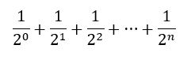

Newton's method to calculate square roots is an example of an algorithm that repeats as long as it can improve the result. It's just a variation of our accumulator pattern. Many algorithms work this way and so require the use of indefinite iteration.
Here is another accumulator pattern program. It adds up the reciprocals of powers of two.

You may have studied this sequence in a math class and learned that the sum approaches but never reaches 2.0. That is true in theory. However, when we implement this summation in a program, we see something different.
Modify the program...
If the sum never reaches 2.0, the loop would never terminate. But the loop does stop! How many repetitions did it make before it stopped?
On line 7 (not indented), print the value of a_number and you will see.
But why did it reach 2.0? Are those math teachers wrong?
© Copyright 2018 LTC Tom Babbitt, Kyle King, Chip Schooler, Brad Miller, David Ranum, Originally created using Runestone Interactive.